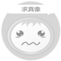

<div id="all">
<!--头部-->
<div id="allHeader">

  <!--头部左边-->
  <div id="leftHeader">

    
    <button id="toggleNavBtn" md-mini-fab  (click)="openNav(sidenav)" (mousedown)="killnNavToggleBug()">
      <i class="material-icons" [ngClass]="{'arrow_back_open':isNavOpen,'arrow_back_close':!isNavOpen}">arrow_back</i>
    </button>
    <span id="contentTitle"></span>
  </div>

  <!--头部右边-->
  <div id="rightHeader">
    <input class="simpleInput" placeholder="搜索你关心的事">
    <button md-icon-button  id="searchBtn"><i class="material-icons" style="font-size:18px;">search</i></button>
    <button md-icon-button>
      <i class="material-icons ">dashboard</i>
    </button>
    <button md-icon-button class="msg-btn">
      <i class="material-icons icon-btn">notifications</i>
    </button>
    <button md-icon-button><i class="material-icons icon-btn">person</i></button>
  </div>


</div>
<!--头部结束-->
<md-sidenav-container id="navContainer">

  <!--导航面板开始-->
  <md-sidenav mode="side" opened="true" #sidenav   id="sideNavPanel">
    <div id="navContent">
      <div id="userProfile">
        
        <p id="nickName">笨笨的小熊</p>
      </div>
      <!--导航ul-->
      <div id="allNav">
        <div class="nav" disabled="true" routerLink="person-center/home-page" (click)="changeActiveLink(0)" [ngClass]="{'navActive':activeLinkFlag[0]}">
          <button md-button><i class="material-icons ">dashboard</i>我的主页<i class="material-icons arrow_drop">arrow_drop_down</i></button>
        </div>
        <div class="nav">
          <button md-button><i class="material-icons icon-btn">grade</i>点滴足迹<i class="material-icons arrow_drop">arrow_drop_down</i></button>
        </div>
        <div class="nav">
          <button md-button><i class="material-icons icon-btn">forum</i>浪漫密聊<i class="material-icons arrow_drop">arrow_drop_down</i></button>
        </div>
        <div class="nav">
          <button md-button><i class="material-icons icon-btn">email</i>飞鸽传书<i class="material-icons arrow_drop">arrow_drop_down</i></button>
        </div>
        <div class="nav">
          <button md-button><i class="material-icons icon-btn">group_work</i>红果密圈<i class="material-icons arrow_drop">arrow_drop_down</i></button>
        </div>
        <div class="nav">
          <button md-button><i class="material-icons icon-btn">shop_two</i>分享圈子<i class="material-icons arrow_drop">arrow_drop_down</i></button>
        </div>
        <div class="nav">
          <button md-button><i class="material-icons icon-btn">favorite</i>幸福之墙<i class="material-icons arrow_drop">arrow_drop_down</i></button>
        </div>
        <div class="nav" routerLink="person-info" (click)="changeActiveLink(7)" [ngClass]="{'navActive':activeLinkFlag[7]}">
          <button md-button><i class="material-icons icon-btn">settings</i>资料设置<i class="material-icons arrow_drop">arrow_drop_down</i></button>
        </div>
        <!--<ul>
          <li>我的主页</li>
          <li>个人中心</li>
          <li>浪漫密聊</li>
          <li>点滴足迹</li>
          <li>红果小圈</li>
          <li>爱洒满园</li>
          <li>幸福之墙</li>
          <li>资料设置</li>
        </ul>-->
      </div>
    </div>

  </md-sidenav>
  <!--导航面板开始-->

  <!--主体内容开始-->
  <div id="allContent">

    <router-outlet></router-outlet>

  </div>
  <!--主体内容结束-->

</md-sidenav-container>
</div>
<div id="message" (click)="top()">123</div>
